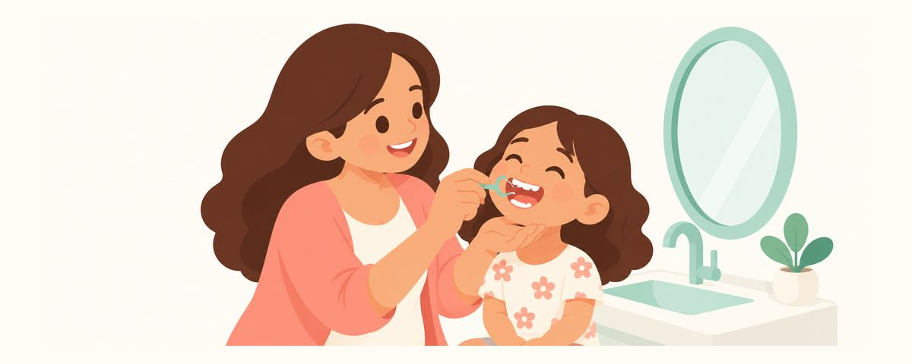

Gigi berlubang di sela geraham tidak terlihat: benang gigi untuk anak dan rontgen bitewing
Sekitar usia empat tahun, geraham susu merapat dan gigi berlubang bisa tersembunyi di antaranya. Kiat benang gigi oleh orang tua dan alasan bertanya soal rontgen bitewing.
Sekilas
- Gigi berlubang di sela geraham yang bersentuhan tidak terlihat
- Pakai benang gigi sekali sehari di sela geraham, untuk saat ini Anda yang melakukannya
- Tanyakan soal rontgen bitewing saat pemeriksaan
Gigi sudah rajin disikat dan dari luar tampak baik-baik saja, tetapi banyak orang tua kaget saat pemeriksaan mendengar "ada gigi berlubang di sela geraham". Sela geraham adalah tempat yang tidak terjangkau sikat dan tidak terlihat oleh mata. Berikut alasannya dan cara melindunginya di rumah.
Saat geraham merapat, sikat tidak bisa menjangkau
Semua geraham susu sudah tumbuh sekitar usia dua tahun. Awalnya ada celah di antara gigi, tetapi seiring rahang tumbuh, geraham saling menempel rapat. Bulu sikat tidak bisa masuk ke permukaan yang bersentuhan ini. Serajin apa pun menyikat, sisa makanan dan plak yang terselip di antaranya tetap tertinggal.
Masalahnya, jika gigi berlubang muncul di tempat ini, tidak terlihat dari luar. Lubang dimulai dari permukaan yang bersentuhan lalu menyebar ke bagian dalam gigi, jadi jika dilihat dari atas, gigi tampak baik-baik saja. Saat lubang terlihat dari luar atau anak mulai kesakitan, sering kali sudah cukup parah. Terlebih lapisan luar gigi susu tipis sehingga lubang cepat menyebar. Inilah sebabnya gigi berlubang di sela geraham sering ditemukan mulai sekitar usia empat tahun.
Karena itu, di masa ini ada dua hal yang diperlukan. Di rumah, bersihkan permukaan yang bersentuhan dengan benang gigi, dan di dokter gigi, jika perlu, periksa bagian yang tidak terlihat dengan rontgen bitewing.
Sekali sehari, orang tua yang memakaikan benang gigi
Bersihkan sela geraham dengan benang gigi 1 kali sehari. Gerakan tangan anak masih kaku sehingga sulit melakukannya sendiri, jadi orang tua yang melakukannya. Jika dilakukan bersamaan dengan sikat gigi sebelum tidur, lebih mudah menjadi kebiasaan. Benang gigi boleh dipakai sebelum atau sesudah sikat gigi, asalkan teliti.
- Baringkan anak di pangkuan, atau berdiri di belakang anak dan sandarkan kepalanya ke tubuh Anda.
- Benang gigi bergagang (floss pick berbentuk Y) lebih mudah dipakai di mulut yang kecil.
- Letakkan benang di sela gigi, lalu masukkan sambil digesekkan maju-mundur perlahan. Jangan menekan dari atas sampai menghentak gusi.
- Di dekat gusi, tempelkan benang ke satu gigi seolah membungkusnya, usap naik turun, lalu bersihkan gigi sebelahnya dengan cara yang sama.
- Bersihkan sela geraham atas, bawah, kiri, dan kanan secara bergiliran.
Setelah makan camilan lengket, minta anak berkumur dengan air. Di hari-hari pertama, anak mungkin merasa asing atau gusinya sedikit berdarah. Jika dilakukan dengan lembut dan rutin, lama-lama ia terbiasa. Daripada berusaha membersihkan semua sela geraham sejak awal, lakukan sebatas yang bisa ditoleransi anak dan teruskan dengan urutan yang sama setiap hari. Setelah selesai, puji singkat, misalnya "bersih-bersih sela gigi hari ini selesai!", agar penolakannya berkurang.
Kesalahan yang sering terjadi adalah menundanya dengan alasan "masih kecil, benang giginya nanti saja". Jika geraham sudah mulai bersentuhan dan Anda belum memakai benang gigi, sekaranglah saatnya. Kesalahan lain adalah memasukkan benang gigi dengan keras. Benang gigi seharusnya tidak sakit. Jika anak kesakitan, artinya tenaganya terlalu kuat.
Pertanyaan yang sering diajukan
Pemeriksaan apa rontgen bitewing itu?
Ini foto rontgen kecil yang diambil di area geraham sambil anak menggigit film atau sensor kecil. Foto ini menunjukkan sela geraham dan bagian dalam gigi, sehingga dipakai untuk menemukan gigi berlubang yang tidak terlihat oleh mata.
Apakah radiasi aman untuk anak?
Dosis radiasi rontgen bitewing sangat rendah. Perlu tidaknya dan seberapa sering ditentukan dokter gigi sesuai risiko gigi berlubang. Panduan terbaru menyatakan apron timbal dan pelindung tiroid tidak perlu dipakai secara rutin, meskipun sebagian klinik masih memakainya sesuai aturan masing-masing.
Jika sela geraham masih renggang, apakah tetap perlu benang gigi?
Jika celahnya cukup lebar, sikat bisa menjangkau dan bagian itu terlihat, jadi tidak terlalu mendesak. Namun, jika makanan terselip, keluarkan dengan benang gigi, dan begitu geraham mulai bersentuhan, lakukan setiap hari.
Bukankah berkumur dengan baik bisa menggantikan benang gigi?
Berkumur dengan air membantu mengurangi sisa makanan yang lengket. Namun, plak yang menempel di permukaan yang bersentuhan tidak lepas hanya dengan berkumur, jadi benang gigi tetap diperlukan.
Kapan anak bisa memakai benang gigi sendiri?
Keterampilan tangannya perlu berkembang cukup baik, jadi butuh waktu cukup lama. Sampai saat itu orang tua yang melakukannya, dan jika anak ingin mencoba, biarkan ia mencoba lalu orang tua yang menyelesaikan.
Kapan perlu ke dokter gigi
- Makanan sering terselip di sela geraham
- Anak kesakitan saat mengunyah atau hanya mengunyah di satu sisi
- Gusi berdarah di tempat yang sama setiap kali memakai benang gigi dan tidak membaik
- Sela geraham tampak kehitaman
- Anda belum menanyakan saat pemeriksaan rutin apakah perlu rontgen bitewing
Dapatkan di waktu yang tepat
Masukkan tanggal lahir anak Anda (atau perkiraan tanggal persalinan) di aplikasi Kalender Gigi, dan artikel-artikel ini akan datang sebagai pengingat tepat saat dibutuhkan. Gratis, tanpa daftar.
Sumber
Informasi dalam aplikasi ini bersifat edukasi umum dan tidak menggantikan perawatan gigi oleh tenaga profesional. Konsultasikan kondisi anak Anda dengan dokter gigi.